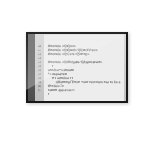

Getting Started
|  |  | |
| IDE Overview If you have not used an integrated development environment (IDE) before, or want to know what kind of IDE Qt Creator is, go to IDE Overview. | User Interface If you have not used Qt Creator before, and want to become familiar with the parts of the user interface, go to User Interface. | Configuring Qt Creator To make Qt Creator behave more like your favorite code editor or IDE, you can change the settings for keyboard shortcuts, color schemes, generic highlighting, code snippets, and version control systems. For an overview of the options you have, go to Configuring Qt Creator. |
 | ||
| Building and Running an Example To check that kits for building and running were successfully installed as part of the Qt installation, open an example application and run it. If you have not done so before, go to Building and Running an Example. | Tutorials Now you are ready to start developing your own applications. Pick a tutorial to follow in Tutorials. To start developing for mobile devices, select Creating a Mobile Application. |